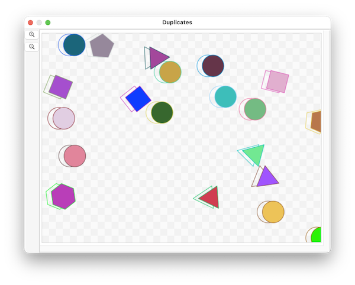

Duplication is a new feature in version 26.4.3
SinterPixels shapes understand the duplicate action. Any shape can be duplicated. Here's a script which creates some polygons and circles, then duplicates each one, moving the duplicate a small bit, and then sets the fill color of the original to clear, making an interesting effect:

tell application "SinterPixels"
tell document 1
repeat 10 times
make new polygon with properties {radius:30}
make new circle with properties {radius:25}
end repeat
repeat with s in (get every shape)
set dupe to duplicate s
set oldX to x coordinate of s
set x coordinate of dupe to oldX + 12
set fill color of s to clear
end repeat
end tell
end tell